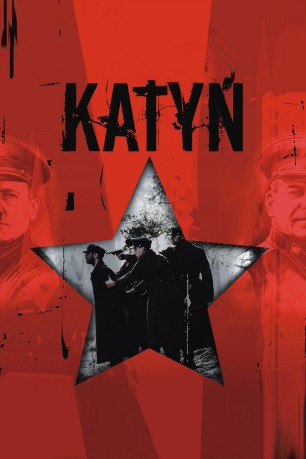
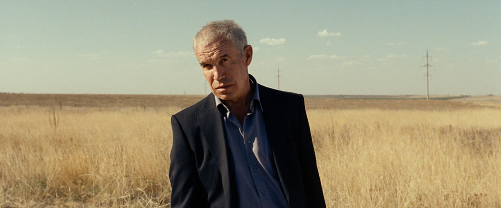

#6693 Das Massaker von Katyn
Auszeichnungen: für 1 Oscars nominiert
 
 IMDB-Wertung: 7.1 / 10
IMDB-Wertung: 7.1 / 10  Metascore: 0
Metascore: 0 
Im zweiten Weltkrieg lässt Stalin 20.000 polnische Offiziere im Wald von Katyn hinrichten. Die Greueltat wird lange verschwiegen und schließlich werden von sowjetischer Seite die Deutschen beschuldigt. "Katyn" erzählt die Geschichte der Morde gleichermaßen aus Sicht der Offiziere sowie aus der Sicht der daheimgebliebenen Frauen und Familien. Kapitän Andrzej (Artur Zmijewski) gibt die Hoffnung auf eine Befreiung nicht auf, während seine Frau Anna (Maja Ostaszewska) im geteilten Polen auf seine Rückkehr hofft. Die Frau eines Piloten (Magdalena Cielecka) kämpft schließlich dafür, die Wahrheit über die Morde aufzudecken.
Jahr: 2007
Dauer: 121 Minuten
FSK: 16
Land: Polen Studio: Pandastorm PicturesTonspuren:
Untertitel: Deutsch,
Auflösung: 1080p (1920x800) Größe: 6031 MB
Genre: Drama, Krieg, Geschichte
Regisseur: Andrzej Wajda
Drehbuch: Andrzej Mularczyk
Soundtrack:
Darsteller:
- Andrzej Chyra als Lt. Jerzy
- Maja Ostaszewska als Anna
- Artur Zmijewski als Andrzej
- Danuta Stenka als Róza
- Jan Englert als General
- Magdalena Cielecka als Agnieszka
- Agnieszka Glinska als Irena
- Pawel Malaszynski als Lt. Piotr
- Maja Komorowska als Andrzej's Mother
- Wladyslaw Kowalski als Professor Jan
- Antoni Pawlicki als Tadeusz
- Agnieszka Kawiorska als Ewa
-  Sergey Garmash als Maj. Popov
 Joachim Paul Assböck als Obersturmbannführer Brunon Müller
Joachim Paul Assböck als Obersturmbannführer Brunon Müller- Jacek Braciak als Lt. Klin
- Stanislaw Brudny als Old Man at the Bridge
- Stanislawa Celinska als Stasia
- Leon Charewicz als UB Major
 Krzysztof Globisz als Professor of Chemistry
Krzysztof Globisz als Professor of Chemistry- Krzysztof Kolberger als Priest
 Olgierd Lukaszewicz als Priest
Olgierd Lukaszewicz als Priest- Maria Maj als Wanda Wasilewska
- Leszek Piskorz als Priest
- Waldemar Pokromski als Barber
- Anna Radwan als Elzbieta
- Dariusz Toczek als Polish Officer
- Krystyna Zachwatowicz als Mrs. Greta
- Ilja Zmiejew als Lt. Kozlov
- Grzegorz Kwiecien als
- Jacek Lenartowicz als
- Andrzej Szenajch als Professor
- Waldemar Barwinski als Polish Officer
- Sebastian Bezzel als Propaganda Abteilung Officer
- Waldemar Czyszak als
- Alicja Dabrowska als Actress
- Oleg Drach als Commisar
- Aleksander Fabisiak als Teacher
- Wiktoria Gasiewska als Weronika
- Zbigniew Kozlowski als Militia Officer
- Rafal Kronenberger als
- Roman Leus als
- Janusz Lagodzinski als
- Tomasz Miedzik als
- Józef Mika als German Translator
- Andrzej Pieczynski als German Soldier
- Dariusz Poleszak als German Officer
- Jakub Przebindowski als Young priest
- Jacek Romanowski als
- Rafal Sadowski als
- Oleg Savkin als NKWD Officer
Datei: X:\2007(G-M)\Massaker von Katyn, Das (2007, FSK16, 1920x800).mkv seit 07.08.2017
Festplatte: HD 2007(A-Z)-2008(A-F)
 Es gibt insgesamt 64 Filme in der Gruppe '2007(G-M)'
Es gibt insgesamt 64 Filme in der Gruppe '2007(G-M)'